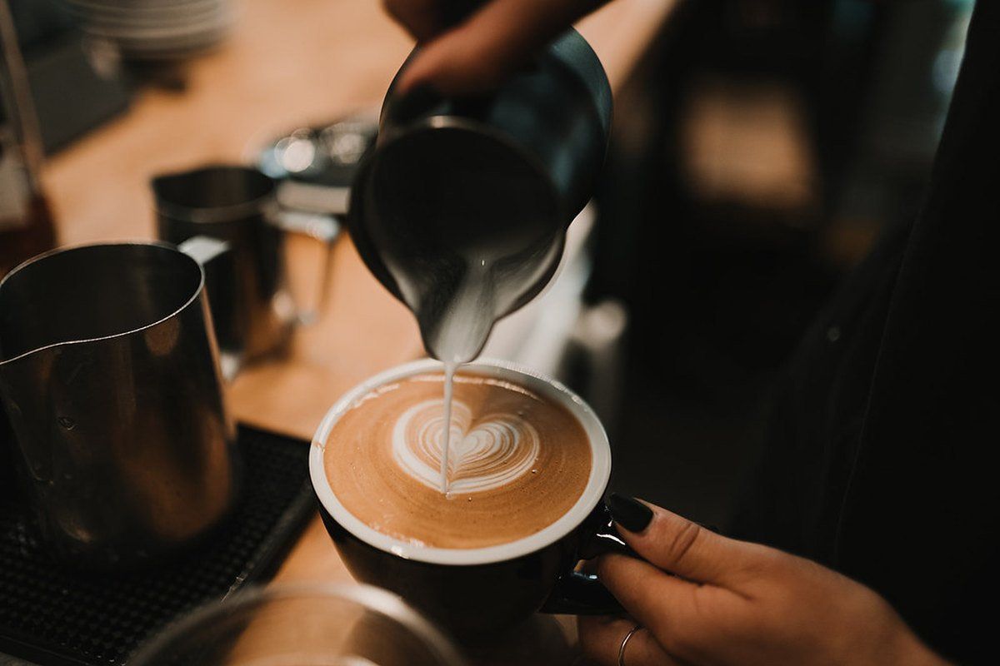

YOGYAKARTA — PT Kopi Nusantara Sejahtera meresmikan gerai ke-30 di Jl. Malioboro No. 88, Yogyakarta, Jumat (6/11/2026). Peresmian yang dihadiri mitra petani, komunitas kopi, dan perwakilan pemerintah daerah ini sekaligus menjadi titik peluncuran program “Panen Muda”, yaitu pendampingan bagi 200 petani kopi muda di lima daerah penghasil.

Gerai ke-30 menempati bangunan tiga lantai dengan kapasitas 120 kursi, ruang cupping, dan area edukasi publik. Selain menjadi kedai, gerai ini dirancang sebagai ruang komunitas: setiap akhir pekan tersedia kelas singkat mengenal kopi Nusantara yang terbuka untuk umum tanpa biaya.
“Gerai ini bukan sekadar penambahan jumlah. Kami ingin setiap kedai menjadi pintu masuk cerita petani, sehingga konsumen mengenal asal biji kopi yang mereka minum,” ujar Direktur Utama PT Kopi Nusantara Sejahtera, Budi Santoso, dalam sambutannya.
Panen Muda: mendampingi 200 petani muda
Melalui program Panen Muda, perusahaan bermitra dengan 200 petani berusia di bawah 35 tahun di Gayo (Aceh), Toraja (Sulawesi Selatan), Lampung, Bajawa (Nusa Tenggara Timur), dan Kintamani (Bali). Program berlangsung 18 bulan dan mencakup pendampingan agronomi, pelatihan pascapanen, akses pembiayaan, serta jaminan pembelian hasil panen.
Perusahaan menargetkan penambahan pasokan 300 ton green bean per tahun dari program ini, dengan kenaikan pendapatan petani peserta minimal 25 persen dibandingkan pola jual beli sebelumnya.
“Kami tidak hanya membeli biji kopi. Kami ikut menjaga regenerasi petani. Jika anak muda tidak lagi mau menanam kopi, industri ini akan kehilangan masa depannya.” Budi Santoso, Direktur Utama PT Kopi Nusantara Sejahtera
Beasiswa barista bagi pemuda desa
Pada kesempatan yang sama, perusahaan meluncurkan 40 beasiswa penuh pelatihan barista di Akademi Barista Nusantara bagi pemuda dari desa mitra. Kurikulum mencakup dasar-dasar espresso, manual brew, cupping, pelayanan pelanggan, dan manajemen kedai selama 12 pekan.
Direktur Operasional Rina Kartika menyebut lulusan beasiswa akan diprioritaskan untuk mengisi kebutuhan barista di gerai baru perusahaan, yang ditargetkan bertambah menjadi 36 gerai pada akhir 2027.
“Setiap gerai baru membutuhkan sedikitnya enam barista terlatih. Beasiswa ini menjawab dua hal sekaligus: kebutuhan tenaga kerja kami dan kesempatan kerja bagi pemuda desa.” Rina Kartika, Direktur Operasional
Rangkaian kegiatan peresmian
- Cupping session bersama komunitas kopi Yogyakarta dan mitra petani Gayo.
- Demo latte art dan kelas singkat “Mengenal Kopi Nusantara” untuk pengunjung.
- Diskusi panel “Masa Depan Petani Kopi Muda” bersama akademisi dan perwakilan petani.
- Pameran foto perjalanan biji kopi dari kebun hingga cangkir.
Sukarman (29), petani mitra dari Gayo yang hadir dalam acara, menyambut baik jaminan pembelian hasil panen. “Yang kami butuhkan adalah kepastian harga dan pendampingan. Kalau itu ada, anak muda di kampung akan tertarik menanam kopi lagi,” katanya.
Peresmian gerai ke-30 dan peluncuran Panen Muda menjadi penanda arah pertumbuhan perusahaan: memperluas jaringan kedai sambil memperkuat hulu, yaitu petani sebagai mitra jangka panjang.
PT Kopi Nusantara Sejahtera adalah perusahaan kopi yang berdiri di Yogyakarta sejak 2015. Perusahaan mengolah dan mendistribusikan kopi dari 12 provinsi, mengoperasikan 30 kedai di 9 kota, menyelenggarakan Akademi Barista Nusantara, dan menyediakan pasokan kopi korporat. Kemitraan harga adil serta praktik usaha berkelanjutan menjadi landasan kerja perusahaan bersama 850 petani mitra.